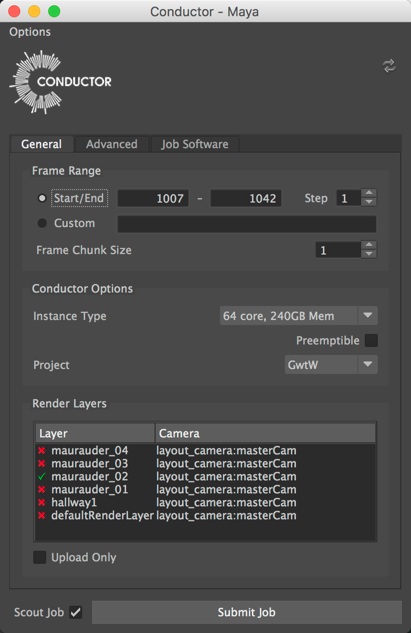
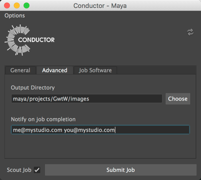
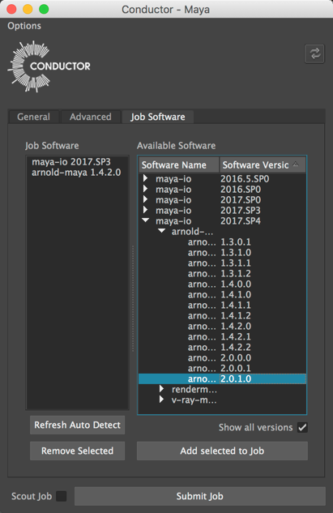
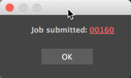

Maya submitter¶
Introduction¶
The Conductor submitter for Maya allows you to ship Arnold, Vray, or native Maya renders to Conductor. It handles a variety of plugins, such as Yeti, Xgen, Golaem crowd and so on.
Installation¶
If you haven't already done so, install Conductor client tools.
Launch the submitter.¶
Once Conductor is installed you'll see a Conductor shelf containing a button. When you are ready to submit a render, click the shelf button to launch the submitter.
Alternatively, enter the following commands in a Python tab in the script editor:
conductor import submitter_maya submitter_maya.MayaConductorSubmitter.runUi()
Note
You must have a scene loaded that exists on disk before the submitter can launch.
The submitter is divided into three tabs:
- General
- Advanced
- Job software
General¶
Set the values specific to this submission.

Frame Range¶
The start, end, and step values that specify the range to render.
Frame Chunk Size¶
A chunk is the set of frames handled by one task. If your renders are fast but loading the scene is slow, it may make sense to render may frames per task. If this is the case, set chunk size to a value greater than one.
Instance Type¶
Specify the hardware configuration used to run your tasks. Higher specification instances are potentially faster and able to handle heavier scenes. You are encouraged to run tests to find the most cost-efficient combination that meets your deadline.
Preemptible¶
Preemptible instances are less expensive to run than non-preemptible. The drawback is that they may be stopped at any time by the cloud provider. The probability of an instance being preempted rises with the duration of the task. Conductor does not support checkpointing, so if a task is preempted it is started from scratch on another instance. For this reason, you are encouraged to specify non-preemptible instances if your renders take several hours.
Note
It is possible to change the preemptible setting in the web dashboard after the job has been submitted.
Project¶
The Conductor project allows you to track usage and set cost limits on a project by project basis.
Render Layers¶
Specify the layers and cameras you want to render?
Note
Conductor does not currently support Render Setup introduced in Maya 2016.5. As an interim workaround, you can set Maya to use Legacy Render Layers in Preferences->Rendering->Preferred Render Setup System
Upload Only¶
Uploads files but does not start any tasks.
Scout Frames¶
Activates a set of frames to be rendered first. This allows you to check a subset of frames before committing to the full render.
Advanced¶
Set the download location and notification email addresses.

Output Directory¶
Specify the location where rendered files. Any files produced by the render must be descendents of the output directory.
Notify on job completion¶
Add email addresses you would like to be notified upon job completion, preemption or failure. To add multiple addresses, separate them with a space.
Job Software¶
Select the software versions used to process your tasks. In most cases, versions are detected automatically based on those used in the scene. However, in some cases it may be necessary to override them.

Job Software¶
Indicates the versions of the software Conductor uses to process your job.
Available Software¶
Select alternative software versions here.
Reset UI¶
At anytime, you can reset the settings by using the Reset UI data button in the upper right corner of the submitter interface.
Warning
Do not add any software versions that are not required for your renders as you are likely to incur unnecessary charges.
Submit Your Job¶
When you press Submit Job the submitter scans the scene for file dependencies and uploads to Conductor. Once the upload stage is complete, a job number is displayed that you can use to monitor your job in the Conductor web interface.
